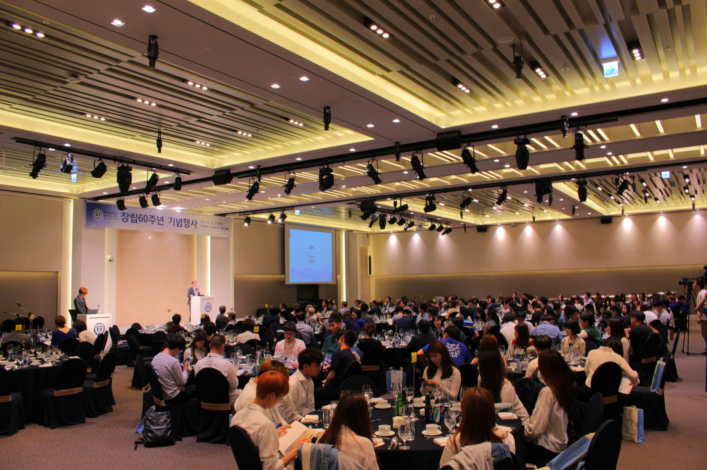
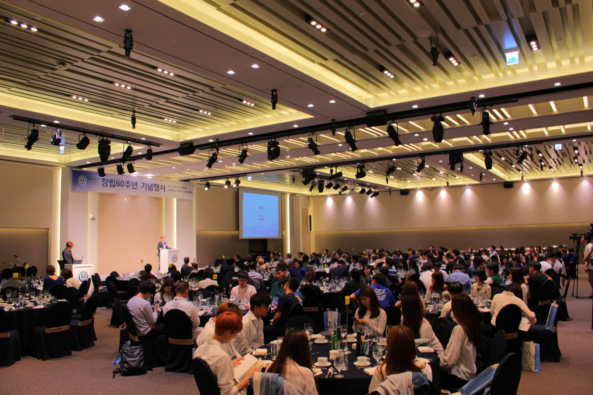

1959년 12월 6일 연세대학교 도서관학과 동문회 창립총회 개최
1960년 5월 29일 제 1회 임시총회
1961년 4월 30일 제 1회 동문회 정기 총회
1967년 10월 14일 연세대학교 도서관학과 및 도서관학당 창립 10주년 기념행사
(중략)
2007년 연세대 문헌정보학과 50주념 기념 행사 개최
2015년 이용훈(78학번) 동문회장 선출
2017년 5월 27일 연세대학교 문헌정보학과 60주념 기념행사 개최
1977년 10월 20일
동문회는 도서관학과가 설립되고 2년 뒤인 1959년 12월 6일, 연세대학교 도서관학과 동문회 창립총회를 개최로 시작되었다.
동문회 항립총회에는 민영규 명예회장과 엄대섭 회장을 중심으로 많은 동문이 참석하였고 현재까지도 동문회 화롱은 꾸준히 그 명맥을 잇고 있습니다.
한편 1990년대 후반 학부제의 도입으로 인해 동문회는 위기를 겪게 되었습니다. 이를 극복하기 위해 동문회는 학부 학생회에서 주관하였던 동문 초청수양회를 동문 수양회로 대체하여 주관하고 학부생을 초청하여 선후배와 동기들이 소통할 수 있는 장을 마련하였습니다. 이러한 노력은 창립 50주년 행사 및 매년 열리는 동문회 송년회로 이어졌고 현재까지도 동문회는 다양한 활동을 통해 동문들의 결속의 다지기 위하여 노력하고 있습니다.
 
